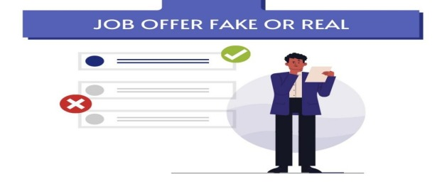
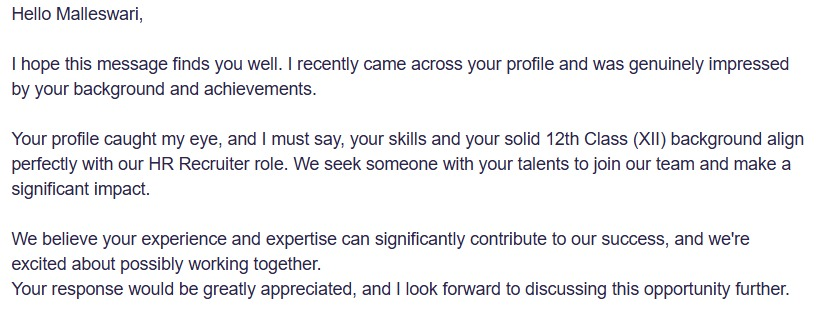
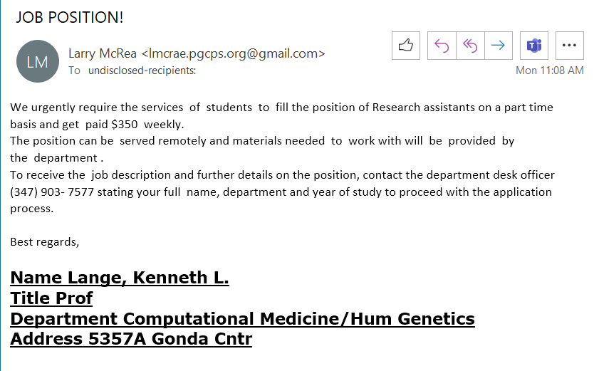

Fake Job Post Detection
Home
Login
Register
Welcome to Smart Detection of Fake Job Post

How to Identify Fake Job Posts
Check the company website and verify job postings.
Avoid jobs that ask for payments upfront.
Research the recruiter’s LinkedIn profile.
Be cautious of emails with poor grammar and urgent requests.
Verify interview locations and ensure they match legitimate company offices.
Fake job messages
 